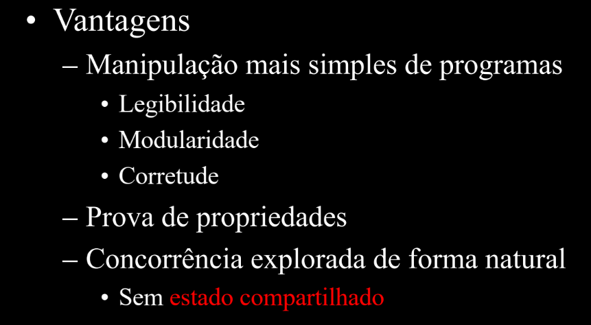

PARADIGMAS DE LINGUAGENS COMPUTACIONAIS¶
- Monitoria: https://drive.google.com/drive/folders/1V8XFhhf1mPC0qanE1Hi8BMLjIPIbsj5L?usp=sharing
Paradigmas de Programação¶
Um paradigma significa um exemplo geral ou modelo que serve de base para compreender, observar e orientar a resolução de problemas. No contexto de linguagens de programação, um paradigma fornece e determina a visão que o programador tem sobre como estruturar e executar um programa.
- Na programação orientada a objetos, o programador abstrai um programa como uma coleção de objetos que interagem entre si.
- Na programação lógica, o programador abstrai o programa como um conjunto de predicados que estabelecem relações entre objetos (axiomas) e uma meta (teorema) a ser provada usando esses predicados.
Algumas linguagens foram desenvolvidas para suportar um paradigma específico, mas existem linguagens multiparadigma (Lisp, Python, Perl, C++, entre outras). Os paradigmas se diferenciam pelas técnicas de programação que permitem ou proíbem — por exemplo, a programação estruturada não permite o uso de goto.
A grande divisão: imperativo vs. declarativo¶
| Programação Imperativa | Programação Declarativa | |
|---|---|---|
| Ênfase | Como resolver o problema | O que o programa deve fazer |
| Descrição | Computação como ações, enunciados ou comandos que mudam o estado do programa | Resultado desejado, sem especificar os passos exatos para alcançá-lo |
| Metáfora | "Faça isso, depois isso, depois aquilo" | "Isto é o que eu quero" |
| Paradigmas | Procedimental (C, Pascal), Orientado a Objetos (Java, Smalltalk) | Funcional (Haskell, OCaml, Lisp), Lógico (Prolog) |
A programação funcional é o paradigma declarativo que descreve uma computação como uma expressão a ser avaliada. A principal forma de estruturar o programa é através da definição e aplicação de funções, baseando-se na ideia matemática de calcular. Diferente do modelo imperativo clássico, que se apoia na definição de computador pelas Máquinas de Turing, a programação funcional se baseia na definição por meio do Cálculo Lambda.
Nesse paradigma, todos os subprogramas são vistos como funções que recebem argumentos e retornam resultados, onde a solução depende apenas da entrada — e o momento em que a função é chamada é irrelevante, já que essas funções não produzem efeitos colaterais.
Vantagens da programação funcional:
- Manipulação mais simples de programas: legibilidade, modularidade, corretude.
- Prova de propriedades (ver seção de Transparência Referencial, abaixo).
- Concorrência explorada de forma natural, sem estado compartilhado.
Problemas/desvantagens:
- "O mundo não é funcional!" — o esforço inicial de adaptação ao paradigma não é desprezível.
- Implementações historicamente menos eficientes (a relevância disso depende do domínio da aplicação).
- Mecanismos mais primitivos de entrada/saída (E/S) e formatação, prejudicando a interface com o usuário.
Slides originais


Por que usar linguagens declarativas?
Linguagens declarativas permitem escrever programas de forma clara, concisa e com alto nível de abstração, permitem prototipagem rápida, fornecem poderosas ferramentas de resolução de problemas e suportam componentes de software reutilizáveis. Isso ajuda a enfrentar dificuldades centrais do desenvolvimento de software — o tamanho e a complexidade de sistemas modernos, o tempo e custo de desenvolvimento, e a confiança de que os programas concluídos funcionam corretamente.
Haskell¶
Haskell é uma linguagem declarativa funcional pura, com tipagem estática, tipos e funções recursivas, um sistema de tipos poderoso, avaliação lazy (preguiçosa) e programas tipicamente concisos — características que, juntas, facilitam o raciocínio sobre o comportamento dos programas.
É um produto de código aberto que permite o desenvolvimento rápido de software robusto, conciso e correto, com bom suporte para integração com outras linguagens, concorrência e paralelismo integrados, depuradores e bibliotecas ricas. O resultado é um software mais flexível, de alta qualidade e de fácil manutenção. A programação em Haskell é essencialmente baseada em definições.
O código é organizado em módulos — um conjunto de definições (tipos, variáveis, funções etc.). Para que as definições de um módulo sejam usadas em outro, o módulo precisa ser importado; uma coleção de módulos relacionados forma uma biblioteca.
Transparência Referencial¶
Uma das propriedades mais importantes de Haskell é a transparência referencial: uma expressão pode ser substituída pelo seu valor resultante sem alterar o comportamento do programa. Isso é o que permite provar propriedades matemáticas sobre funções, pois a ordem de avaliação não altera o resultado — variáveis, uma vez vinculadas, nunca mudam de valor. É essa propriedade que permite tratar código Haskell como matemática pura.
Transparência referencial na prática
Em uma linguagem imperativa, a ordem dos "fatores" pode alterar o resultado, pois ela reatribui o valor de b:
Como f reatribui a variável global b antes de retornar, o valor de b usado em addD muda dependendo de qual dos dois argumentos é avaliado primeiro — a expressão à esquerda e à direita do == podem produzir resultados diferentes.
Em Haskell, independentemente da ordem de avaliação, o valor de b permanece imutável — exatamente como na matemática pura:
-- Exemplo:
addD a b = 2 * (a+b)
= 2 * (b+a) = addD b a
-- Válida para quaisquer argumentos a e b.
-- Não seria válida em linguagens imperativas, com variáveis globais...
Slides originais


Definição de funções¶
Os parâmetros das funções são separados apenas por espaço, e o nome da função deve começar com letra minúscula.
-- | square :: Int -> Int
-- Define a função 'square' que recebe um valor do tipo Int (inteiro) e retorna um valor do tipo Int.
square :: Int -> Int
-- | square x = x * x
-- A função 'square' recebe um argumento chamado 'x'
-- e o seu resultado é a multiplicação de 'x' por ele mesmo (o quadrado).
square x = x * x
-- | allEqual :: Int -> Int -> Int -> Bool
-- Define a função 'allEqual' que recebe três valores do tipo Int
-- e retorna um valor do tipo Bool (booleano), ou seja, 'True' ou 'False'.
allEqual :: Int -> Int -> Int -> Bool
-- | allEqual n m p = (n == m) && (m == p)
-- A função 'allEqual' compara os três argumentos (n, m, p).
-- (n == m): Verifica se 'n' é igual a 'm'.
-- (m == p): Verifica se 'm' é igual a 'p'.
-- &&: É o operador lógico "e". A expressão só será verdadeira (True)
-- se ambas as comparações (n == m E m == p) forem verdadeiras.
allEqual n m p = (n == m) && (m == p)
-- | maxi :: Int -> Int -> Int
-- Define a função 'maxi' que recebe dois valores do tipo Int e retorna um Int.
maxi :: Int -> Int -> Int
-- | maxi n m | n >= m = n
-- Usa uma "guarda" para definir o comportamento.
-- Se a condição (n >= m) for verdadeira, a função retorna o valor de 'n'.
maxi n m | n >= m = n
-- | | otherwise = m
-- O "otherwise" atua como um "senão".
-- Se a condição acima for falsa (ou seja, se 'm' for maior que 'n'),
-- a função retorna o valor de 'm'.
| otherwise = m
Alguns exemplos de chamada dessas funções, incluindo as duas notações (com e sem parênteses/vírgulas) para aplicação de função:
square 5 -- = 25
square(5) -- = 25
allEqual 1 2 3 -- = False
allEqual(1,2,3) -- ERRO!!! (isso seria interpretado como 1 argumento, uma tupla)
allEqual(1) (2) (3) -- = False
maxi 24 645 -- = 645
Slide original

Recursão¶
Toda função recursiva em Haskell precisa definir um caso base e, no caso geral, definir o valor em termos da própria função.
vendas :: Int -> Int
vendas _ = 10 -- toda semana vende 10
totalVendas :: Int -> Int
totalVendas n
| n == 0 = vendas 0
| otherwise = totalVendas (n-1) + vendas n
maxVendas :: Int -> Int
maxVendas n
| n == 0 = vendas 0
| otherwise = maxi (maxVendas (n-1)) (vendas n)
Casamento de padrões (Pattern Matching)¶
O casamento de padrões permite usar padrões no lugar de variáveis na definição de funções — são, na prática, os próprios "casos" de uma função matemática.
maxVendas :: Int -> Int
maxVendas 0 = vendas 0
maxVendas n = maxi(maxVendas(n-1)) (vendas n)
totalVendas :: Int -> Int
totalVendas 0 = vendas 0
totalVendas n = totalVendas (n-1) + vendas n
myNot :: Bool -> Bool
myNot True = False
myNot False = True
myOr:: Bool -> Bool
myOr True x = True
myOr False x = x
myAnd :: Bool -> Bool
myAnd False x = False
myAnd True x = x
Regras do casamento de padrões:
- Todos os padrões (à esquerda) devem ter tipos compatíveis — não necessariamente iguais.
- Os casos devem ser exaustivos, embora isso não seja obrigatório (gerando funções parciais).
- Não deve haver ambiguidade: a ordem dos padrões é usada para resolver conflitos.
Slide original

Os casos de um pattern match devem idealmente ser exaustivos, mas isso não é obrigatório — nesse caso obtemos funções parciais, que falham em tempo de execução para entradas não cobertas.
Notação¶
Convenções de nomenclatura em Haskell:
- Maiúsculas: tipos e construtores (para tipos algébricos).
- Minúsculas: funções, constantes e parâmetros.
- É case sensitive.
- Comentários:
--isso é um comentário de uma linhae{- comentário de várias linhas... -}.
Existem duas formas de usar funções binárias (prefixa e infixa):
Alguns erros comuns de notação (a mensagem de erro real do GHC está ao lado de cada exemplo):
square x = x
*x
-- parse error on input '*'
funny x = x +
1
-- parse error (possibly incorrect indentation)
Funny x = x+1
-- Not in scope: data constructor `Funny'
Slides originais


Definições locais: where e let¶
whereaparece no final de uma equação ou guarda, definindo nomes visíveis apenas naquela equação.letaparece antes da expressão que usa as variáveis, podendo ser usado em qualquer lugar — exceto em definições de funções no nível superior.
sumSquares :: Int -> Int -> Int
sumSquares x y = sqX + sqY
where sqX = x * x
sqY = y * y
-- equivalente, usando uma só função local:
sumSquares x y = sq x + sq y
where sq z = z * z
-- a mesma coisa com 'let ... in':
sumSquares x y = let sqX = x * x
sqY = y * y
in sqX + sqY
maxThreeOccurs :: Int -> Int -> Int -> (Int, Int)
maxThreeOccurs m n p = (mx, eqCount)
where mx = maxiThree m n p
eqCount = equalCount mx m n p
-- Resumindo:
-- let definições in expressão
-- definições where definições
Slides originais


Tipos básicos¶
| Tipo | Descrição |
|---|---|
Integer |
Precisão arbitrária |
Int |
Precisão fixa (bounded) |
Bool |
Booleano |
Char |
Caractere |
String |
Cadeia de caracteres |
Float |
Ponto flutuante, ~8 dígitos decimais |
Double |
Ponto flutuante, ~16 dígitos decimais |
Operadores e funções:
- Aritméticos:
+,*,^,-,div,mod,abs,negate. - Relacionais:
>,>=,==,/=,<=,<.
Booleanos:
Slides originais


Listas¶
Listas são coleções de objetos de um mesmo tipo.
[1,2,3,4] :: [Int]
[(5,True),(7,True)] :: [(Int,Bool)]
[[4,2],[3,7,7,1],[],[9]] :: [[Int]]
['b','o','m'] :: [Char]
"bom" :: [Char]
Slide original

O construtor de listas (:) tem a assinatura a -> [a] -> [a], recebendo uma cabeça (head, do tipo a) e uma cauda (tail, do tipo [a]), e devolvendo a lista resultante.
-- Outra forma de escrever listas:
[5] é o mesmo que 5:[]
[4,5] é o mesmo que 4:(5:[])
[2,3,4,5] é o mesmo que 2:3:4:5:[]
-- (:) é um construtor polimórfico:
(:) :: Int -> [Int] -> [Int]
(:) :: Bool -> [Bool] -> [Bool]
(:) :: t -> [t] -> [t]
Slide original

Listas também podem ser declaradas através de ranges:
[2..7] = [2,3,4,5,6,7]
[-1..3] = [-1,0,1,2,3]
['a'..'d'] = ['a','b','c','d']
[2.8..5.0] = [2.8,3.8,4.8]
[7,5..0] = [7,5,3,1]
[2.8,3.3..5.0] = [2.8,3.3,3.8,4.3,4.8]
Slide original

Algumas funções úteis sobre listas:
-- Comprimento
length :: [t] -> Int
length [] = 0
length (a:as) = 1 + length as
-- Concatenação
(++) :: [t] -> [t] -> [t]
[] ++ y = y
(x:xs) ++ y = x : (xs ++ y)
-- Estas funções são polimórficas!
Um exemplo de uso de recursão sobre listas — somar os elementos de uma lista:
Slides originais


E as compreensões de lista (list comprehensions), que permitem construir listas de forma declarativa a partir de outras listas e condições — usadas para definir listas em função de outras listas:
doubleList xs = [2*a | a <- xs]
doubleIfEven xs = [2*a | a <- xs, isEven a]
sumPairs :: [(Int,Int)] -> [Int]
sumPairs lp = [a+b | (a,b) <- lp]
digits :: String -> String
digits st = [ch | ch <- st, isDigit ch]
Slide original

case¶
O case permite casamento de padrões com valores arbitrários — não apenas com os argumentos da função:
Slide original

Tuplas¶
intP :: (Int, Int)
intP = (33,43)
(True, 'x') :: (Bool, Char)
(34, 22, 'b') :: (Int, Int, Char)
addPair :: (Int,Int) -> Int
addPair (x,y) = x+y
shift :: ((Int,Int),Int) -> (Int,(Int,Int))
shift ((x,y),z) = (x,(y,z))
Slide original

Tipos¶
É possível nomear tipos (inclusive compostos, como tuplas) com type, criando sinônimos que tornam assinaturas mais legíveis:
type Name = String
type Age = Int
type Phone = Int
type Person = (Name, Age, Phone)
name :: Person -> Name
name (n,a,p) = n
Slide original

Polimorfismo¶
Uma função é polimórfica quando possui um tipo genérico, usando variáveis de tipo em vez de tipos concretos.
Slide original

Esse polimorfismo "paramétrico" é usado quando o tipo exato dos elementos não importa para a lógica da função (ex: length, que funciona para listas de qualquer tipo).
Overloading¶
Já o overloading é o polimorfismo de sobrecarga: o mesmo nome de função com definições distintas para cada tipo. Uma classe (typeclass), em Haskell, é uma coleção de tipos para os quais uma função está definida — por exemplo, o conjunto de tipos para os quais == está definida é a classe Eq. Outras classes comuns incluem Ord, Show, Num e Read.
Para expressar polimorfismo restrito por classe, basta usar a classe como restrição no tipo:
Exemplo
allEqual :: Eq t => t -> t -> t -> Bool
allEqual n m p = (n == m) && (m == p)
member :: Eq t => [t] -> t -> Bool
member [] b = False
member (a:as) b = (a==b) || member as b
Slide original

As instâncias são os membros concretos de uma classe — por exemplo, Int, Float, Char, Bool, [Int], (Int,Bool), [[Char]] e [(Int,[Bool])] são todos instâncias de Eq, mas (Int -> Int) não é. Instâncias são TIPOS, não valores.
Slide original

Funções de Alta Ordem¶
Uma função de alta ordem é aquela que recebe uma função como argumento e/ou retorna uma função como resultado.
Exemplo
applyBinOper :: (t -> t -> t) -> t -> t -> t
applyBinOper f x y = f x y
-- Exemplos:
applyBinOper (+) 10 20 -- 30
applyBinOper (*) 10 20 -- 200
applyBinOper (||) True False -- True
applyBinOper (++) "abc" "def" -- "abcdef"
Slide original

O argumento-função é aquele que aparece entre parênteses, e normalmente é uma função de transformação — recebe um valor e retorna outro valor transformado.
Funções de alta ordem facilitam o entendimento e as modificações do código (basta trocar a função de transformação), aumentam o reuso de código, e se apoiam no conceito de Currying: a técnica que transforma uma função de múltiplos argumentos em uma sequência de funções, cada uma recebendo um único argumento.
As quatro funções de alta ordem mais usadas sobre listas em Haskell são:
map — aplica uma função a cada elemento da lista.
map :: (a -> b) -> [a] -> [b]
-- Exemplo
map (*2) [1,2,3,4]
-- [2,4,6,8]
-- Implementação:
map :: (t -> u) -> [t] -> [u]
map f [] = []
map f (a:as) = f a : map f as
-- Outros exemplos:
doubleList xs = map times2 xs
sqrList xs = map sqr xs
seconds :: [(t,u)] -> [u]
seconds xs = map snd xs
Slide original

fold — reduz uma lista a um único valor, aplicando uma função binária recursivamente. Pode ser foldr (acumula da direita para a esquerda) ou foldl (acumula da esquerda para a direita).
foldr :: (a -> b -> b) -> b -> [a] -> b
foldl :: (b -> a -> b) -> b -> [a] -> b
-- Exemplo
foldr (+) 0 [1,2,3,4]
-- 10
foldl (+) 0 [1,2,3,4]
-- 10
-- Implementação (ideia geral, caso base sem o acumulador):
-- e1 + e2 + ... + em
fold :: (t -> t -> t) -> [t] -> t
fold f [a] = a
fold f (a:as) = f a (fold f as)
sumList l = fold (+) l
Slide original

filter — mantém apenas os elementos que satisfazem um predicado (função que retorna um Bool).
filter :: (a -> Bool) -> [a] -> [a]
-- Exemplo
filter even [1,2,3,4,5,6]
-- [2,4,6]
-- Implementação:
filter :: (t -> Bool) -> [t] -> [t]
filter p [] = []
filter p (a:as)
| p a = a : filter p as
| otherwise = filter p as
-- Outros exemplos:
digits, letters :: String -> String
digits st = filter isDigit st
letters st = filter isLetter st
evens xs = filter isEven xs
where isEven n = (n `mod` 2 == 0)
Slide original

all — recebe um predicado e uma lista, retornando True se a função vale para todos os elementos.
curry e uncurry¶
curry transforma uma função que recebe um par em uma função que recebe dois argumentos separados:
curry :: ((a, b) -> c) -> a -> b -> c
f :: (Int, Int) -> Int
f (x,y) = x + y
g :: Int -> Int -> Int
g = curry f
-- Agora:
f (3,4) -- 7
g 3 4 -- 7
uncurry faz o inverso — transforma uma função de dois argumentos separados em uma função que recebe um par:
uncurry :: (a -> b -> c) -> (a, b) -> c
h :: Int -> Int -> Int
h x y = x * y
k :: (Int, Int) -> Int
k = uncurry h
-- Agora:
h 3 4 -- 12
k (3,4) -- 12
Composição de Funções¶
O operador (.) é o operador de composição de funções em Haskell: (f . g) significa "aplica g primeiro, depois aplica f".
(.) :: (u -> v) -> (t -> u) -> (t -> v)
-- Exemplo
negate . abs $ (-5)
-- Primeiro abs (-5) = 5
-- Depois negate 5 = -5
Essa composição permite estruturar programas inteiros compondo funções menores:
fill :: String -> [Line]
fill s = splitLines (splitWords s)
-- pode ser reescrito como:
fill = splitLines . splitWords
--
twice :: (t -> t) -> (t -> t)
twice f = f . f
--
iter :: Int -> (t -> t) -> (t -> t)
iter 0 f = id
iter n f = (iter (n-1) f) . f
Notação Lambda¶
É uma forma de definir funções anônimas, diretamente inspirada no Cálculo Lambda (\(\lambda x.\, x + 1\) é, em essência, o que a notação abaixo representa):
Aplicações Parciais¶
Em Haskell, toda função é curried: ela recebe um argumento e retorna outra função, se ainda faltam argumentos. Isso permite a aplicação parcial — passar apenas parte dos argumentos de uma função, obtendo de volta uma nova função que espera o restante.
multiply :: Int -> Int -> Int
multiply a b = a * b
-- O tipo real é:
multiply :: Int -> (Int -> Int)
-- Aplicações
multiply 2 -- função que multiplica por 2
(multiply 2) 5 -- 10
-- multiply 2 é uma função que multiplica por 2
-- , passada para o map
doubleList :: [Int] -> [Int]
doubleList = map (multiply 2)
doubleList [1,2,3] -- [2,4,6]
Associatividade¶
A aplicação de função em Haskell é associativa à esquerda:
-- Definição simples
add :: Int -> Int -> Int
add x y = x + y
main = do
print (add 2 3) -- 5
print ((add 2) 3) -- 5 (mesma coisa, aplicação é à esquerda)
Já o símbolo de tipo função -> é associativo à direita — funções sempre retornam funções, até consumir todos os parâmetros.
-- Observe os tipos:
-- Int -> Int -> Int
-- é o mesmo que Int -> (Int -> Int)
mul :: Int -> Int -> Int
mul x y = x * y
main = do
let f = mul 4 -- f :: Int -> Int
print (f 5) -- 20
Essa associatividade à direita explica as curried functions: uma função de 2 argumentos é, na verdade, uma função que recebe 1 argumento e retorna outra função.
g :: (Int -> Int) -> Int
g h = h 0 + h 1
-- h é uma função de Int -> Int
-- As funções são passadas como argumentos,
-- não só valores
Tipos Algébricos¶
Tipos algébricos são, em certo sentido, semelhantes a enums de outras linguagens — mas muito mais poderosos.
data Estacao = Inverno | Verao
Primavera | Outono
data Temp = Frio | Quente
clima :: Estacao -> Temp
clima Inverno = Frio
clima _ = Quente
Tuplas vs. tipos algébricos: tuplas combinam valores de forma anônima e posicional; tipos algébricos nomeiam a estrutura e seus construtores, tornando o código mais legível e seguro:
-- Com tuplas: elementos mais compactos, definições mais curtas,
-- e maior probabilidade de reusar funções polimórficas.
type Pessoas = (Nome, Idade)
-- Com tipos algébricos: cada objeto do tipo tem um rótulo explícito.
-- Não se pode confundir um tipo com outro, devido ao construtor
-- (definições fortemente tipadas). Permitem tipos recursivos e enumerados.
data Pessoas = Pessoa Nome Idade
Slides originais


Os construtores de um tipo algébrico também podem receber argumentos:
data Nome_do_Tipo
= Construtor1 t11 ... t1k1
| Construtor2 t21 ... t2k2
...
| Construtorn tn1 ... Tnkn
-- O tipo pode ser recursivo.
-- A definição pode ser polimórfica, adicionando argumentos ao Nome_do_Tipo.
-- Exemplo:
data Shape = Circle Float
| Rectangle Float Float
Circle 4.9 :: Shape
Rectangle 4.2 2.0 :: Shape
isRound :: Shape -> Bool
isRound (Circle _) = True
isRound (Rectangle _ _) = False
Slides originais


Forma geral de um tipo algébrico — tipos de dados recursivos, com funções também definidas recursivamente sobre eles:
data Nome_do_Tipo
= Construtor1 t11 ... t1k1
| Construtor2 t21 ... t2k2
...
| Construtorn tn1 ... Tnkn
-- O tipo pode ser recursivo.
-- A definição pode ser polimórfica, adicionando argumentos ao Nome_do_Tipo.
-- Exemplo de tipo recursivo e função recursiva sobre ele:
data Expr = Lit Int
| Add Expr Expr
| Sub Expr Expr
eval :: Expr -> Int
eval (Lit n) = n
eval (Add e1 e2) = (eval e1) + (eval e2)
eval (Sub e1 e2) = (eval e1) - (eval e2)
Slides originais (o slide da forma geral aparece repetido duas vezes no material original)


E os tipos polimórficos, que combinam tipos algébricos com variáveis de tipo:
-- Tipos de dados polimórficos:
data Pairs t = Pair t t
Pair 6 8 :: Pairs Int
Pair True True :: Pairs Bool
Pair [] [1,3] :: Pair [Int]
-- Listas
data List t = Nil | Cons t (List t)
-- Árvores
data Tree t = NilT
| Node t (Tree t) (Tree t)
É possível criar um tipo algébrico como instância de algumas classes (comportamento padrão, nem sempre faz sentido — se necessário, é possível especificar uma instância manualmente):
Slides originais


Laziness (Avaliação Preguiçosa)¶
Haskell usa, por padrão, uma estratégia de avaliação chamada laziness: uma expressão só é calculada no momento exato em que seu resultado é de fato necessário (call-by-need). Ao atribuir uma expressão a uma variável, Haskell não a executa imediatamente — ele cria uma "promessa" de cálculo chamada thunk.
O thunk contém a expressão e tudo o que é necessário para calculá-la. A expressão só é avaliada quando outra parte do programa realmente precisa do valor da variável: nesse momento, o thunk é "forçado", a expressão é avaliada, o resultado é armazenado para uso futuro, e o thunk é substituído por esse resultado. Se o valor for necessário novamente depois, o resultado já calculado é reutilizado, evitando recálculos desnecessários.
Vantagem: estruturas de dados infinitas
Com laziness, é possível definir e manipular listas e outras estruturas de dados que são teoricamente infinitas:
-- Uma lista infinita de todos os números inteiros a partir de n
infinitosAPartirDe n = n : infinitosAPartirDe (n + 1)
-- Pega os 5 primeiros elementos da lista infinita a partir de 1
primeirosCinco = take 5 (infinitosAPartirDe 1)
-- Resultado: [1,2,3,4,5]
-- O restante da lista infinita nunca é calculado.
Isso permite separar a lógica de geração de dados da lógica de consumo, e evita cálculos desnecessários — se um valor nunca for usado, ele nunca será calculado, o que pode gerar ganhos significativos de eficiência.
Desafios da laziness:
- Space Leaks: se um programa acumular um grande número de thunks sem avaliá-los, pode consumir uma quantidade significativa de memória.
- Previsibilidade de performance: o desempenho pode se tornar menos previsível, já que o momento exato de um cálculo pode ser difícil de determinar apenas lendo o código.
Para mitigar esses desafios, Haskell oferece mecanismos para controlar a avaliação e forçar o cálculo de expressões quando necessário:
-
seq: força a avaliação de uma expressão até certo ponto, antes de prosseguir. -
$!: aplica uma função a um argumento, garantindo que o argumento seja avaliado antes da função ser chamada.-- Versão preguiçosa que pode acumular thunks somaPreguicosa :: [Int] -> Int somaPreguicosa xs = foldl (\acc x -> acc + x) 0 xs -- Usando aplicação estrita para forçar a avaliação somaComOpEstrito :: [Int] -> Int somaComOpEstrito xs = foldl f 0 xs where f acc x = (acc +) $! xA expressão
(acc +) $! xparece aplicar a função(acc +)ao argumentox; no entanto,$!não forçax(que já é um valor), mas sim o resultado da função. Uma forma mais clara de usar$!nesse contexto é forçar o acumulador na própria recursão:import Data.List (foldl') -- A forma correta de fazer isso é usar a função pronta -- Implementando uma versão estrita de foldl nós mesmos com $! meuFoldlEstrito :: (b -> a -> b) -> b -> [a] -> b meuFoldlEstrito _ z [] = z meuFoldlEstrito f z (x:xs) = let z' = f z x in meuFoldlEstrito f $! z' $ xs -- Força a avaliação de z' antes da chamada recursiva somaComMeuFoldlEstrito :: [Int] -> Int somaComMeuFoldlEstrito = meuFoldlEstrito (\acc x -> acc + x) 0 -
Anotações de estrita: permitem marcar campos em tipos de dados como estritos, garantindo que seus valores sejam calculados assim que a estrutura de dados for criada.
Mônadas¶
Em Haskell, Monad é uma ferramenta poderosa para gerenciar contextos — como o de falha — permitindo encadear operações de forma limpa e segura, abstraindo a lógica repetitiva de tratamento de contexto. O principal objetivo é facilitar a composição de funções onde o resultado de uma é a entrada da próxima, especialmente quando essas funções podem falhar ou ter efeitos colaterais. Mônadas abstraem o padrão "verificar e continuar", de forma que o programador não precise fazer isso manualmente a cada chamada.
Toda mônada é composta por três elementos:
- Construtor de Tipo: um tipo que encapsula o valor em um contexto.
- Função de Ligação (
>>=, bind): o operador principal para encadear operações monádicas, extraindo o valor do contexto (caso exista) e passando-o para a próxima função. - Função Unidade (
return): uma função que pega um valor puro e o coloca no contexto monádico mínimo.
A mônada Maybe¶
Maybe é a mônada para lidar com computações que podem falhar ou não retornar um valor.
- Construtor de tipo:
data Maybe t = Just t | Nothing. - Função Unidade:
return x = Just x— simplesmente envolve o valor com o construtorJust. - Função de Ligação:
- Caso de sucesso (
Just): se o valor à esquerda do operador forJust x, a funçãofà direita é aplicada ao valorxque estava dentro doJust— ou seja,(>>=) (Just x) f = f x. - Caso de falha (
Nothing): se o valor à esquerda forNothing, a funçãofé completamente ignorada, e o resultado da operação é simplesmenteNothing— ou seja,(>>=) Nothing _ = Nothing.
- Caso de sucesso (
A instância completa de Monad para Maybe:
Slide original

Notação do¶
A notação do torna o código monádico ainda mais legível, fazendo-o parecer com uma sequência de instruções imperativas:
safeTail Nothing = Nothing
safeTail (Just l)
| l /= [] = Just (tail l)
| otherwise = Nothing
do
x <- return 33
y <- safeDiv 10000 x
z <- return $ show y
safeTail z
Java¶
Características Gerais¶
- Tipagem estática: Java exige a declaração explícita dos tipos das variáveis, diferentemente de linguagens dinâmicas como Python.
- Compilação e execução: todo programa Java precisa de pelo menos uma classe; o método
mainé estático e serve como ponto de partida para a execução da aplicação. - Gerenciamento de memória: a linguagem possui um Garbage Collector (coletor de lixo) que gerencia a memória automaticamente, liberando o espaço de objetos não utilizados.
Tipos¶
- Tipos primitivos: armazenam valores diretamente e possuem tamanho fixo. Exemplos:
int,double,boolean,char. - Tipos de referência: armazenam referências (endereços de memória) para objetos. Exemplos:
String, arrays, e classes criadas pelo usuário (comoConta,Livro). O valor padrão para referências não inicializadas énull, indicando ausência de objeto.
Pacotes (Packages)¶
Java utiliza pacotes (ex: java.util, java.lang) para organizar classes e evitar conflitos de nomes. O comando import traz classes de outros pacotes para o escopo atual.
Programação Orientada a Objetos (POO)¶
A POO foca nos dados (objetos), e não apenas nas funções, estruturando o programa de forma mais próxima às atividades do mundo real.
Classe vs. Objeto¶
Um objeto é uma instância concreta de uma classe, criada em memória. Ele possui identidade única, estado (os valores atuais de seus atributos) e comportamento.
Criação e inicialização:
- Operador
new: cria (instancia) um objeto, alocando memória para ele e retornando uma referência. - Construtores: métodos especiais responsáveis por inicializar os atributos do objeto no momento de sua criação. Têm o mesmo nome da classe e não possuem tipo de retorno (nem mesmo
void).- Construtor Default: se nenhum construtor for definido, o Java fornece um construtor implícito, sem parâmetros, que inicializa os atributos com valores padrão (
0para números,falseparaboolean,nullpara referências). - Construtores personalizados: podem receber parâmetros para obrigar a inicialização de dados essenciais (ex: obrigar o número da conta ao criá-la). Ao definir um construtor explícito, o construtor default implícito deixa de existir.
- Construtor Default: se nenhum construtor for definido, o Java fornece um construtor implícito, sem parâmetros, que inicializa os atributos com valores padrão (
Palavra-chave this: representa uma referência para o próprio objeto em execução. É usada com frequência nos construtores e em métodos "set" para distinguir entre os atributos da classe e os parâmetros do método quando eles têm o mesmo nome.
Sobrecarga (Overloading): é a capacidade de ter múltiplos construtores ou métodos com o mesmo nome, mas com listas de argumentos diferentes (assinaturas diferentes) — por exemplo, um construtor que recebe apenas o número da conta e outro que recebe número e saldo inicial. Um construtor pode chamar outro da mesma classe usando this(parametros).
Já a classe é o modelo, a "forma" ou o conceito: ela descreve as propriedades (atributos) e os comportamentos (métodos) que os objetos terão, sendo uma estrutura estática de definição. Por convenção, classes começam com letra maiúscula (CamelCase), enquanto métodos e atributos começam com minúscula.
Classe vs. Objeto
"Conta Bancária" é a classe; a conta específica "123-X com saldo 354,78" é o objeto.
Estrutura de uma classe¶
O corpo de uma classe pode conter atributos, métodos e construtores.
- Atributos (estado): variáveis que caracterizam as propriedades do objeto — por exemplo, uma classe
Contapossuinumero(String) esaldo(double). - Métodos (comportamento): operações que realizam ações e podem modificar os atributos do objeto — por exemplo,
creditar(double valor)altera o saldo da conta. Métodos podem retornar valores (usandoreturn) ou servoid(sem retorno). Bons métodos devem depender o mínimo possível uns dos outros (baixo acoplamento) e ter um propósito único e bem definido (alta coesão).
Membros estáticos (static): variáveis e métodos podem ser declarados como static, o que significa que pertencem à classe, e não a uma instância específica.
- Variáveis estáticas: todos os objetos compartilham a mesma variável — se um objeto a altera, a mudança é visível para todos. Útil para contadores globais ou constantes.
- Métodos estáticos: são chamados através do nome da classe (ex:
Conta.getProximo()) e só podem acessar outras variáveis ou métodos estáticos — eles não têm acesso a atributos de instância (thisnão existe em um contexto estático).
Encapsulamento (Information Hiding): recomenda-se fortemente o uso do modificador private nos atributos, para que eles só sejam acessados ou modificados pelos métodos da própria classe. Isso protege a integridade dos dados e facilita a manutenção e extensibilidade do código — o acesso externo passa a ser feito através de métodos públicos (getters e setters).
A classe String: em Java, Strings são objetos (tipo referência), não tipos primitivos.
- Imutabilidade: uma vez criado, um objeto
Stringnunca é alterado; operações de concatenação geram novos objetos. - Comparação:
==compara se as variáveis referenciam o mesmo objeto na memória;.equals()compara o conteúdo do texto (o valor semântico). - Métodos úteis:
length()retorna o tamanho da string;substring(inicio, fim)extrai uma parte dela;+é o operador de concatenação.
Herança¶
Mecanismo fundamental para estender funcionalidades de classes existentes e promover o reuso de código, permitindo criar uma hierarquia onde uma subclasse herda atributos e métodos de uma superclasse. Em Java, utiliza-se extends para realizar a herança. Java suporta apenas herança simples — uma classe só pode herdar diretamente de uma única superclasse.
Construtores na herança: os construtores da superclasse não são herdados. A subclasse deve definir seus próprios construtores, e deve invocar o construtor da superclasse (por meio da keyword super()) para garantir a inicialização correta dos atributos herdados. Se o construtor da superclasse não tiver parâmetros, o Java faz essa chamada implicitamente; se tiver parâmetros, a chamada deve ser explícita no código da subclasse.
Acesso e visibilidade: embora a subclasse herde atributos private, ela não pode acessá-los diretamente — o acesso deve ser feito através de métodos públicos ou protegidos (como getters/setters ou métodos de negócio).
Override (Sobrescrita)¶
Muitas vezes, o comportamento herdado não é adequado para a subclasse — o Override permite alterar esse comportamento, respeitando duas regras:
- Invariância de assinatura: o nome do método, a lista de argumentos e o tipo de retorno devem ser idênticos aos da superclasse.
- Semântica e visibilidade: a visibilidade não pode se tornar mais restritiva, e a semântica (o que o método faz conceitualmente) deve ser preservada.
Dentro de um método redefinido, é possível chamar a implementação original da superclasse usando super.nomeDoMetodo().
// Classe Pai
class Animal {
public void fazerSom() {
System.out.println("Som genérico de animal");
}
}
// Classe Filha
class Cachorro extends Animal {
@Override // Indica que o método está sendo sobrescrito
public void fazerSom() {
System.out.println("Latido!");
}
}
Princípio da Substituição: um objeto da subclasse deve se comportar como um objeto da superclasse, em qualquer contexto onde este for esperado.
Polimorfismo¶
É a capacidade de um objeto assumir várias formas, ou de responder a uma mesma mensagem de diferentes maneiras. Objetos de uma subclasse podem ser usados em qualquer lugar onde um objeto da superclasse é esperado, o que permite tratar objetos de tipos diferentes de forma uniforme — por exemplo, um método que aceita Conta (superclasse) como parâmetro funciona perfeitamente ao receber uma Poupanca ou ContaEspecial.
Dynamic Binding: o mecanismo que faz o polimorfismo funcionar em tempo de execução. Quando um método é chamado sobre uma variável do tipo Conta, o Java decide qual código executar (o de Conta ou o de Poupanca) com base no tipo real do objeto na memória, e não no tipo declarado da variável. Métodos e atributos marcados com final não podem ser sobrescritos (o que impede o Override) e possuem ligação estática — o Java decide qual código executar em tempo de compilação.
public class FinalVariableExample {
public static void main(String[] args) {
final int MAX_VALUE = 100;
System.out.println("MAX_VALUE: " + MAX_VALUE);
// MAX_VALUE = 200; // Isso causaria um erro de compilação.
}
}
// Neste exemplo, MAX_VALUE é uma variável final.
// Uma vez inicializada, seu valor não pode ser alterado;
// qualquer tentativa de reatribuí-lo
// resultará em um erro de compilação.
Verificação de Tipos e Casting¶
Às vezes é necessário recuperar o tipo específico de um objeto que está armazenado em uma variável genérica. O Casting (conversão explícita) permite isso: para usar métodos exclusivos de uma subclasse (ex: renderJuros de Poupanca) a partir de uma referência de Conta, é preciso fazer um cast — ((Poupanca) conta).renderJuros(...).
Cuidado com ClassCastException
Fazer um cast para o tipo errado gera um erro em tempo de execução (ClassCastException). Para evitar isso, usa-se instanceof para verificar se o objeto é realmente daquele tipo antes de realizar o cast.
class Animal {
void comer() {
System.out.println("O animal está comendo.");
}
}
class Cachorro extends Animal {
void latir() {
System.out.println("Au au!");
}
}
// Código principal
Animal meuAnimal = new Cachorro(); // Upcasting (implícito, automático)
// meuAnimal.latir(); // Isto não compila, pois o compilador não reconhece o método latir() na classe Animal
Cachorro meuCachorro = (Cachorro) meuAnimal; // Downcasting (explícito, manual)
meuCachorro.latir(); // Agora podemos chamar o método latir()
// Saída: Au au!
Referências e Passagem de Parâmetros¶
Em Java, uma variável de tipo classe não guarda o objeto em si, mas sim uma referência (endereço) para ele.
Aliasing: duas variáveis podem apontar para o mesmo objeto. Alterações feitas através de uma variável (ex: b.creditar(...)) afetam a visão da outra variável (a), pois o objeto subjacente é o mesmo.
Passagem de parâmetros em Java é sempre por valor
Para tipos primitivos, copia-se o valor em si (ex: 10, true). Para objetos, copia-se o valor da referência: o método recebe uma cópia do endereço. Se o método alterar o estado do objeto (ex: mudar o saldo), a alteração persiste fora do método. Mas se o método reatribuir a variável local para um new Conta(), a variável original fora do método não é alterada — apenas a cópia local da referência mudou.
Classe Abstrata¶
Uma classe abstrata é um tipo de classe que não pode ser instanciada diretamente (new ContaAbstrata() não é permitido) — ela serve como um modelo incompleto, para herdar código e definir uma interface comum. Declara-se com a keyword abstract.
Uma classe abstrata pode conter atributos e métodos concretos (comuns a todas as subclasses), além de métodos declarados com abstract que não possuem implementação, servindo apenas de assinatura (base comum). Um método abstrato permite programar chamando o método da classe abstrata, forçando todas as subclasses concretas a fornecerem uma implementação — ou seja, além de herdarem código, as subclasses herdam também a obrigação de implementar esse método.
abstract class Animal {
// Método abstrato (sem implementação)
abstract void fazerBarulho();
// Método concreto (com implementação)
void dormir() {
System.out.println("Zzzzz...");
}
}
class Cachorro extends Animal {
// Implementação obrigatória do método abstrato
@Override
void fazerBarulho() {
System.out.println("Au au!");
}
}
public class Main {
public static void main(String[] args) {
Cachorro meuCachorro = new Cachorro();
meuCachorro.fazerBarulho(); // Executa a implementação da classe Cachorro
meuCachorro.dormir(); // Executa a implementação da classe Animal
}
}
Interfaces¶
Uma interface define um contrato ou um padrão de serviços: ela lista os métodos disponíveis e suas assinaturas, sem se preocupar com a implementação. O foco é no o quê a classe pode fazer, e não como ela faz — para isso, utiliza-se a keyword interface na definição e implements na classe que a adota. Por padrão, todos os métodos de uma interface são públicos e abstratos.
A principal vantagem das interfaces é que uma classe pode implementar múltiplas interfaces de uma só vez (ex: class Aviao implements Voador, TransportadorDePessoas), o que supera a limitação de herança simples de classes em Java. Além disso, existe um polimorfismo de interface: um objeto de tipo superclasse (a interface) pode referenciar qualquer objeto de uma subclasse (classe implementadora), onde o método correto é determinado dinamicamente.
// Arquivo: Pagavel.java
public interface Pagavel {
// Todo meio de pagamento precisa conseguir processar um valor
void processarPagamento(double valor);
// Todo meio de pagamento precisa emitir um comprovante
String getComprovante();
}
// Arquivo: Pix.java
public class Pix implements Pagavel {
@Override
public void processarPagamento(double valor) {
System.out.println("Gerando QR Code para valor de R$ " + valor);
System.out.println("Conectando ao Banco Central... Pagamento Instantâneo realizado!");
}
@Override
public String getComprovante() {
return "COMPROVANTE-PIX-12345";
}
}
// Arquivo: CartaoCredito.java
public class CartaoCredito implements Pagavel {
@Override
public void processarPagamento(double valor) {
System.out.println("Validando limite do cartão...");
System.out.println("Cobrando taxa da operadora...");
System.out.println("Pagamento de R$ " + valor + " aprovado no crédito.");
}
@Override
public String getComprovante() {
return "COMPROVANTE-VISA-99887";
}
}
// Arquivo: SistemaLoja.java
public class SistemaLoja {
public static void main(String[] args) {
// Podemos criar uma lista de pagamentos variados
// Note que o tipo da variável é a INTERFACE 'Pagavel'
Pagavel compra1 = new Pix();
Pagavel compra2 = new CartaoCredito();
// Vamos processar tudo num loop
Pagavel[] compras = {compra1, compra2};
System.out.println("--- Iniciando Fechamento de Caixa ---");
for (Pagavel p : compras) {
// AQUI É O POLIMORFISMO:
// O Java decide qual 'processarPagamento' chamar baseando-se no objeto real
p.processarPagamento(100.00);
System.out.println("Recibo: " + p.getComprovante());
System.out.println("--------------------------------");
}
}
}
Classe Abstrata vs. Interfaces¶
| Critério | Classe Abstrata | Interface |
|---|---|---|
| Implementação | Pode conter implementações compartilhadas pelas subclasses | Cada classe implementadora fornece sua própria implementação |
| Estrutura | Pode ter atributos, construtores e métodos concretos | Não define atributos (apenas constantes finais) nem construtores |
| Herança | Herança simples de código (apenas uma superclasse) | "Herança" múltipla de assinaturas (várias interfaces) |
| Uso ideal | Agrupar classes intimamente relacionadas que compartilham estado e comportamento base | Definir um comportamento ou capacidade (o que o objeto faz), independentemente de sua classe |
Exceções¶
Em Java, exceções são objetos derivados da superclasse Exception. O objetivo de usá-las é desenvolver sistemas robustos, separando o código de tratamento de erro do código da lógica normal do programa.
- Levantar o erro: usa-se a palavra-chave
throw, seguida do objeto da exceção (ex:throw new SIException(saldo, numero);). Isso interrompe o fluxo normal e passa o controle para quem chamou o método. - Declarar o erro: na assinatura do método, usa-se
throws(ex:public void debitar(...) throws SIException).
Programação Concorrente¶
Ocorre quando dois ou mais comandos/tarefas progridem "ao mesmo tempo" — útil para permitir múltiplos usuários simultâneos e aumentar a eficiência do sistema. Isso acontece via paralelismo real (múltiplos núcleos) ou divisão de tempo (time slicing) em um único núcleo.
Um dos maiores desafios da concorrência é que comandos que parecem simples em linguagens de alto nível (como Java) não são atômicos: uma instrução aparentemente simples é, na verdade, composta por várias etapas — leitura na memória, lógica do comando, escrita na memória.
Race Condition¶
Em um ambiente concorrente, se duas threads tentarem atualizar a mesma variável ao mesmo tempo sem nenhum controle, elas podem "atrapalhar" uma à outra, pois a execução de uma pode ser interrompida no meio dessas etapas.
Exemplo de race condition
Duas threads leem o valor 1; ambas somam 1; ambas escrevem 2. O resultado deveria ser 3, mas um dos incrementos foi perdido.
Essa interferência arbitrária gera não determinismo: a execução de um programa concorrente pode produzir resultados diferentes a cada execução, o que torna o debug particularmente difícil.
Threads¶
Java não possui um operador nativo de concorrência, mas utiliza o conceito de threads (fios de execução). Há duas formas principais de criar uma:
- Estender a classe
Thread, criando uma subclasse dejava.lang.Threade redefinindo o métodorun(). - Implementar a interface
Runnable, mais flexível quando a classe já herda de outra classe (já que Java não suporta herança múltipla de classes).
Ciclo de vida básico: start() inicia a execução da thread (chamando run() internamente em um novo contexto de execução); join() faz a thread atual esperar até que a thread chamada termine sua execução.
Sincronização e Exclusão Mútua¶
Para evitar interferências e condições de corrida, é necessário controlar o acesso a recursos compartilhados (como atributos de um objeto). Isso é feito através da Exclusão Mútua, por meio de monitores.
Monitores: em Java, todo objeto possui um monitor associado, que funciona como uma trava (lock). São mecanismos de sincronização que garantem que apenas uma thread por vez acesse uma determinada seção de código ou objeto compartilhado. Funcionam encapsulando as estruturas de dados compartilhadas e as operações que as manipulam, com a característica principal de exclusão mútua (apenas uma thread por vez) e, opcionalmente, cooperação entre threads através de espera e notificação, usando os métodos wait() e notify().
Em Java, qualquer objeto pode funcionar como um monitor — basta usar a keyword synchronized.
- Métodos sincronizados: ao declarar um método como
synchronized, a thread deve adquirir o monitor do objeto (this) antes de executá-lo; nenhuma outra thread pode executar qualquer método sincronizado desse mesmo objeto simultaneamente. - Blocos sincronizados: permitem travar apenas um trecho crítico do código, ou usar um objeto específico como trava (
synchronized(objeto) { ... }). Isso reduz o custo de performance e aumenta a granularidade da concorrência. - Região crítica: é o trecho de código onde ocorrem acessos a recursos compartilhados que podem gerar inconsistência. O uso de
synchronizedtorna essa região atômica.
Coordenação entre Threads (wait e notify)¶
Além da exclusão mútua, às vezes as threads precisam cooperar ou esperar por uma condição específica (ex: não debitar se o saldo for insuficiente).
wait(): deve ser chamado dentro de um bloco sincronizado. A thread libera o monitor (lock) e entra em estado de espera até ser notificada — usado quando uma pré-condição não é atendida.wait()deve ser usado dentro de um laçowhile(e não umif), para garantir que a condição seja retestada quando a thread acordar.notify()/notifyAll(): acordam threads que estão esperando no monitor do objeto.notifyAll()acorda todas as threads esperando (mais seguro, para garantir que a thread correta prossiga), enquantonotify()acorda apenas uma, escolhida arbitrariamente.